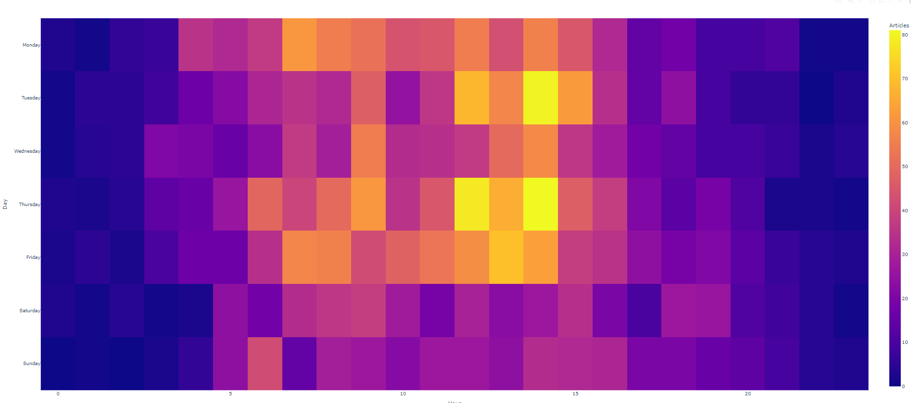
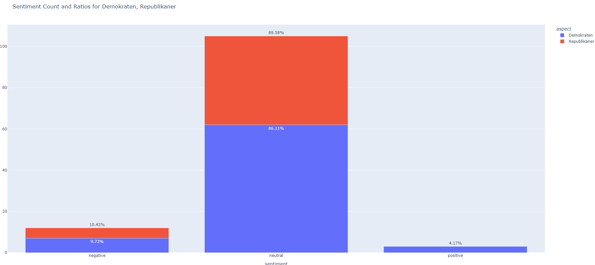
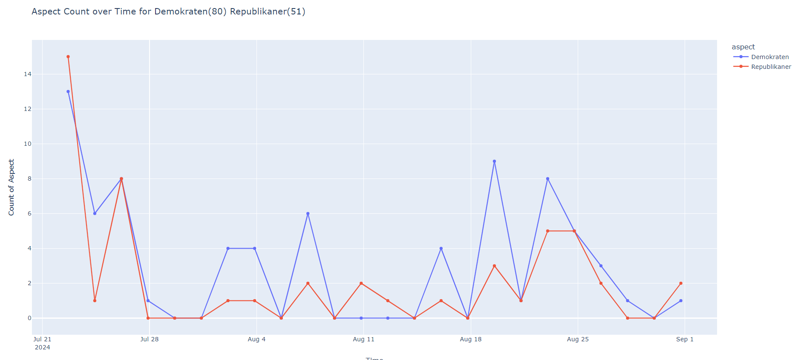
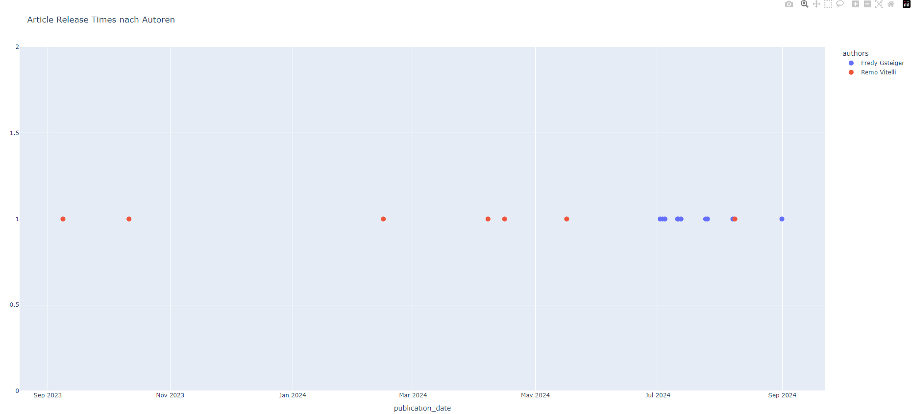

Data Mining SRF
Python • Data Analysis • Web Scraping • Docker
This is my first data mining project where I extracted data from www.srf.ch, a Swiss news site, and then systematically analyzed the data. I was interested in publication time of articles, attention on certain subjects over time, releasing frequency and release timing of certain authors. Also I was interested in possible biases of the publisher concerning specific subjects. This project is still not done and more data is being gathered.
I gathered the relevant HTML files from the source with a script on my Raspberry Pi which reached out once per day to gather the relevant data from the target. This was inspired by David Kriesel's "Reversing Spiegel-Online".
Docker Container Overview
Here is an overview of the data analysis process and all the docker containers involved. I used Docker because of portability reasons, I developed the software on my laptop but I run it on my Raspberry Pi.

Data Analysis Overview
Heat Map Article Publication Time
A first use case analyzes the publication times of all articles published on www.srf.ch. There are 24 × 7 time slots and all articles are matched to one time slot. The more yellow the time slot is, the more articles got published in this time slot. It allows for a specific analysis of publication time of this news site.

Heatmap of article Publication Times
Sentiment Analysis with AI
I also tried a sentiment analysis with specific keywords and compared them to others to maybe find a bias of the newspaper. For this I searched all paragraphs within all articles if they would contain a keyword. Once a paragraph does contain the keyword, I classify the paragraph with the help of an external AI model. The model then classifies the paragraph as negative, neutral or positive and provides a confidence score. In the analysis only paragraphs with a confidence score higher than 0.9 are included.

Sentiment Analysis Results
Aspect Analysis over Time
This plot shows the amount and development over time of specific aspects or keywords.

This is a plot of the keywords (Demokraten, Republikaner)
Specific Author Publication over Time
This function is able to display all the articles of a specific author over time. With this function you're able to analyze the publishing behavior of specific authors.

Author Publication Timeline
Keyword Network Analysis
An interactive network graph showing relationships between keywords and topics in the analyzed articles.